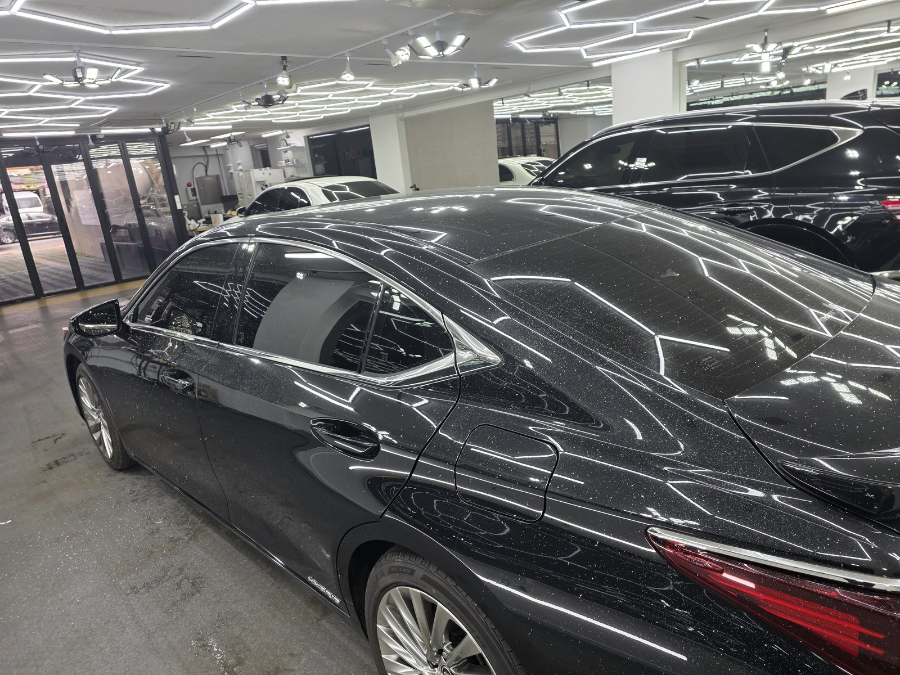
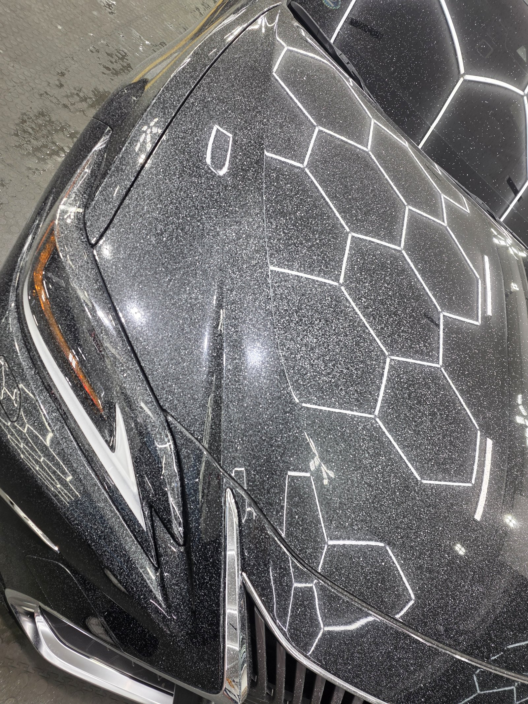
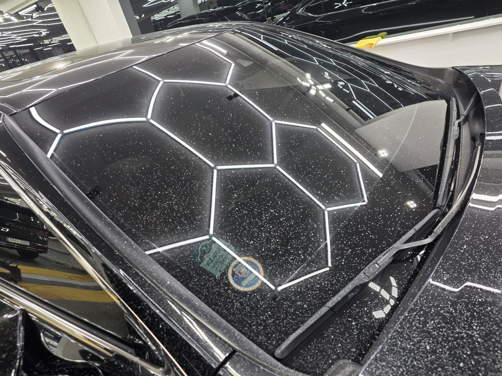
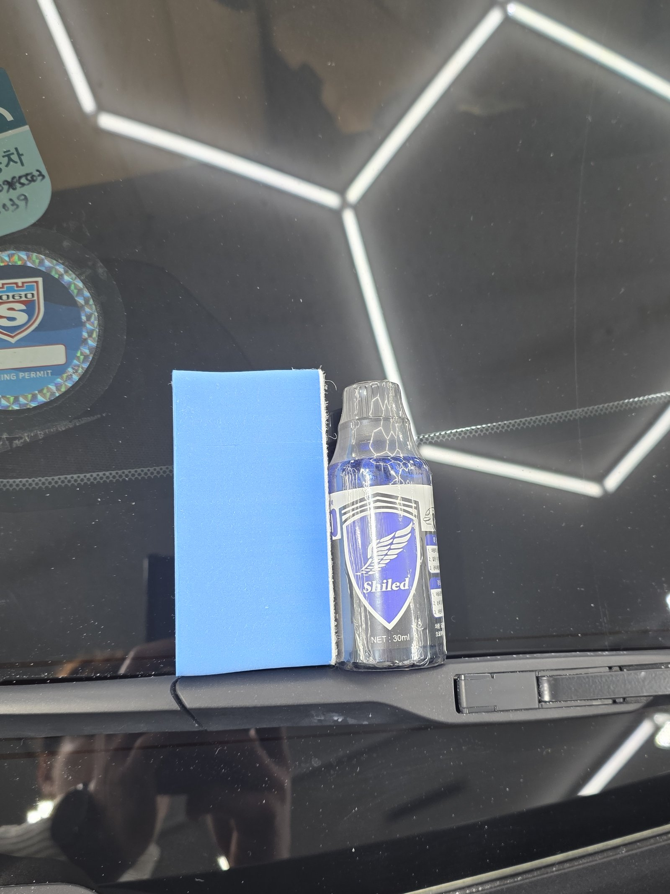
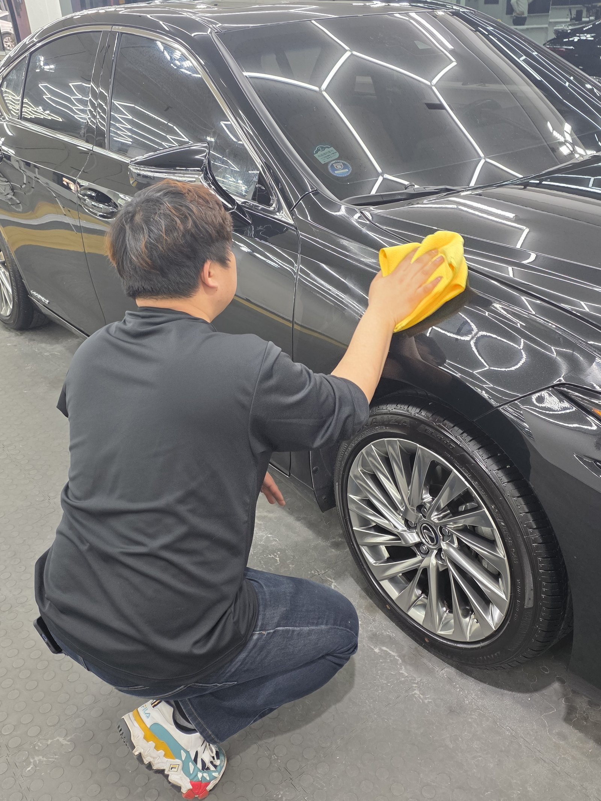
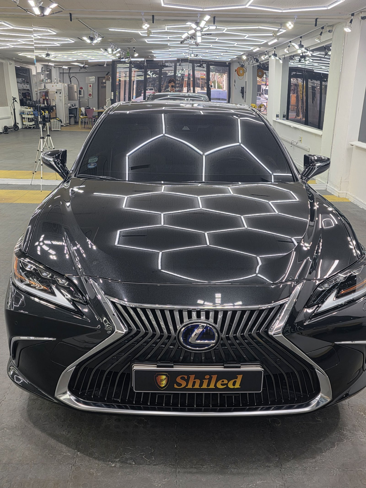
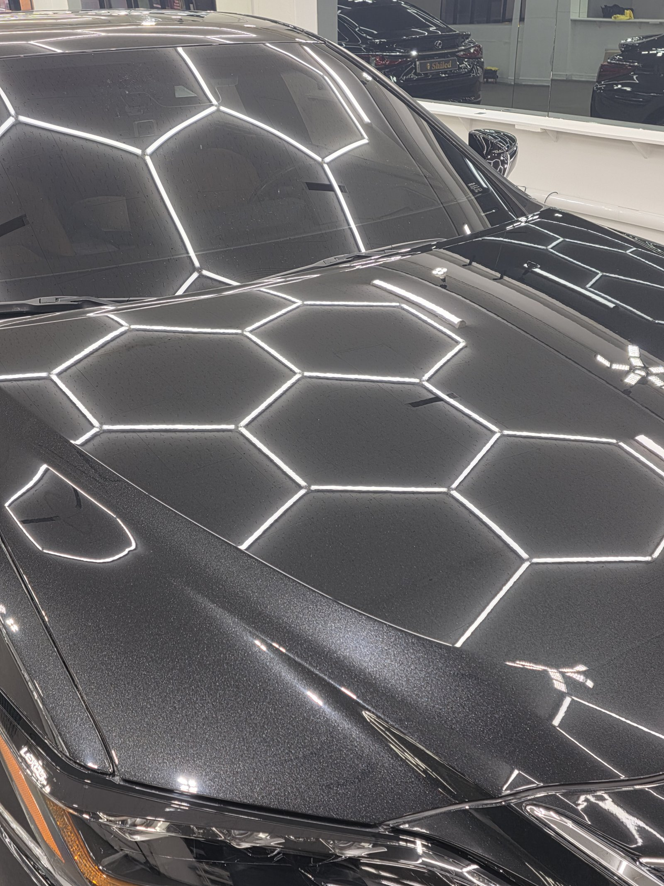
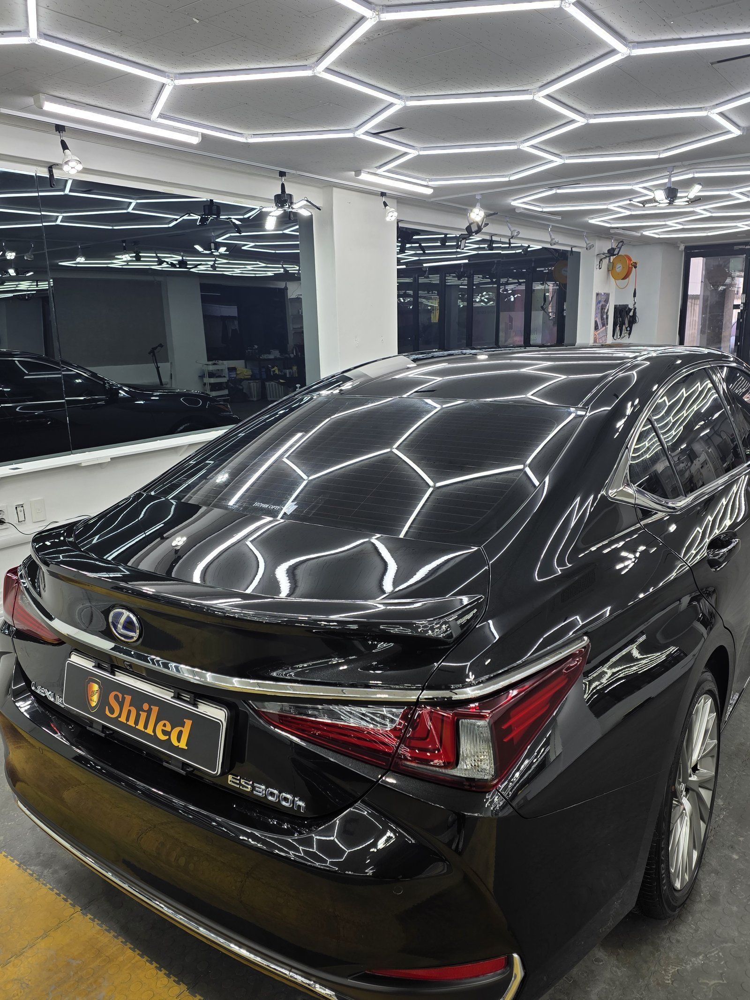

렉서스 ES300h 검정입니다.
도장면이 까끌거린다며 들어오셨습니다.
조명 아래 세워두니 답이 바로 나왔습니다. 페인트 날림입니다.

페인트 날림, 세차로 안 지워지는 이유가 뭔가요
도료가 씻겨나가는 오염이 아니라 굳어버린 알갱이이기 때문입니다.
근처에서 도장 작업이나 공사가 있으면 공중에 흩어진 도료가 미세한 방울로 날아옵니다. 그게 차체 위에 내려앉아 그대로 굳습니다. 물로 씻으면 표면 먼지만 빠지고, 굳은 입자는 그 자리에 그대로 박혀 있습니다.
검정차는 이게 특히 잔인합니다. 명암 대비가 커서 입자 하나하나가 다 보입니다.

작업 전. 본넷 전체에 하얀 알갱이가 빼곡합니다
사진에서 보이는 하얀 점들이 전부 굳은 도료입니다.
육안으로는 "먼지 앉았나" 싶은데, 조명 아래 들어오면 이렇게 드러납니다.

루프와 리어글라스도 같은 상태였습니다
부산 광택, 페인트 날림은 어떤 순서로 잡나
바로 갈아내면 안 됩니다. 그게 제일 중요합니다.
굳은 입자가 도장면 위에 얹혀 있는 상태에서 패드를 대면, 그 입자가 연마재처럼 도장을 긁고 지나갑니다. 없던 상처를 만드는 셈입니다.
그래서 순서를 지킵니다.
① 디테일링 세차와 철분 제거로 표면 오염부터 걷어냅니다.
② 점토와 전용 약품으로 굳은 도료 입자를 하나씩 떼어냅니다.
③ 광택으로 그 과정에서 남은 미세 자국과 헤이즈를 정리합니다.
ES300h는 세단이라 굴곡이 완만한 대신 면적이 넓어서 ②에 시간이 많이 들어갑니다. 구역을 나눠서 같은 밀도로 훑어야 얼룩이 안 남습니다.
기술자의 팁
페인트 날림을 확인하는 가장 쉬운 방법은 비닐봉지를 손에 씌우고 도장면을 쓸어보는 것입니다. 맨손으로는 못 느끼는 까끌거림이 비닐 너머로는 확실하게 잡힙니다. 눈으로 안 보여도 손에 걸리면 남아 있는 겁니다.

입자를 떼어낸 뒤 극세사 타월과 마감 스프레이로 표면을 정돈합니다

넓은 면뿐 아니라 펜더 라인까지 손으로 직접 확인합니다
마감 후, 무엇이 달라졌나
알갱이에 부딪혀 흩어지던 빛이 곧게 맺히기 시작했습니다.
페인트 날림이 있는 도장면은 조명 윤곽이 항상 번져 보입니다. 빛이 입자에 걸려 산란하기 때문입니다. 입자를 걷어내면 같은 조명이 선으로 딱 떨어집니다.

같은 정면, 작업 후. 육각 조명이 흐트러짐 없이 맺힙니다

본넷도 손끝에 걸리는 게 없어졌습니다. 작업 전 02번 사진과 같은 자리입니다

후측면도 입자 없이 깨끗하게 정리됐습니다
자주 묻는 질문
Q. 페인트 날림은 세차로 지워지지 않나요?
A. 지워지지 않습니다. 공중에 흩어진 도료가 미세한 방울 상태로 내려앉아 클리어코트 위에서 그대로 굳기 때문입니다. 물과 세제로는 표면 위 오염만 씻겨나가고, 굳어버린 도료 입자는 손끝에 사포처럼 그대로 걸립니다.
Q. 페인트 날림, 검정차는 왜 더 심각해 보이나요?
A. 명암 대비가 커서 입자 하나하나가 조명 아래 그대로 드러나기 때문입니다. 이번 ES300h도 육안으로는 먼지처럼 보였지만 조명을 받는 순간 도장면 전체에 앉은 하얀 알갱이가 고스란히 드러났습니다.
Q. 페인트 날림 제거는 어떤 순서로 하나요?
A. 먼저 디테일링 세차와 철분 제거로 표면 오염을 걷어냅니다. 그다음 점토와 전용 약품으로 굳은 도료 입자를 물리적으로 떼어내고, 마지막에 광택으로 그 과정에서 생긴 미세 자국까지 정리합니다. 순서를 건너뛰고 바로 갈아내면 입자가 도장면을 긁고 지나갑니다.
Q. 페인트 날림 제거 후 세차만 해도 되나요?
A. 입자를 떼어내는 과정에서 클리어코트 표면이 한 번 정리되기 때문에 마감 관리는 해주시는 게 좋습니다. 이번 ES300h도 마무리 단계에서 극세사 타월과 전용 마감 스프레이로 표면을 다시 정돈해 드렸습니다.
Q. 쉴드광택 위치와 예약은 어떻게 하나요?
A. 부산 남구 유엔로220 1F 쉴드광택입니다. 예약·상담은 010-3384-1850, 대표 최한중이 직접 상담하고 책임 시공합니다.
손으로 쓸었을 때 까끌거린다면 그건 먼지가 아닙니다.
제품을 직접 만드는 사람이 직접 작업합니다.
부산에서 페인트 날림 제거와 광택을 고민 중이시면 편하게 연락 주십시오.
어떤 차를 타냐보다 어떻게 타냐가 중요합니다~!
시공 중에는 전화를 받지 못할 때가 많습니다.
카카오톡으로 차종과 원하시는 시공을 남겨주시면 확인 후 답변드립니다.
쉴드광택 · 부산 남구 유엔로220 1F · 대표 최한중